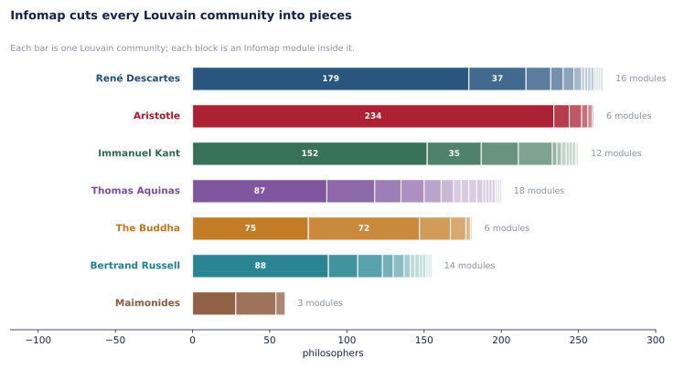
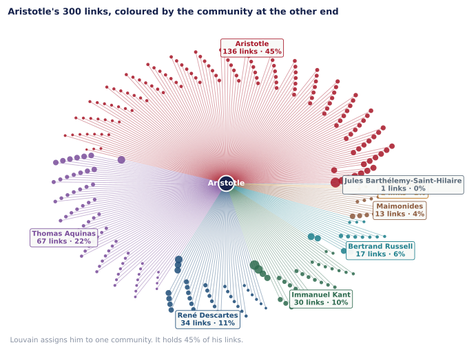
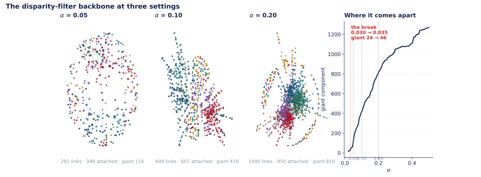
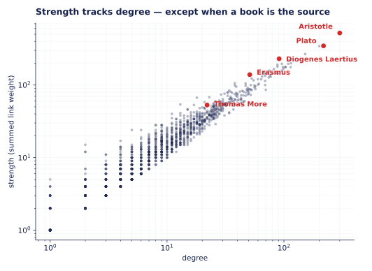
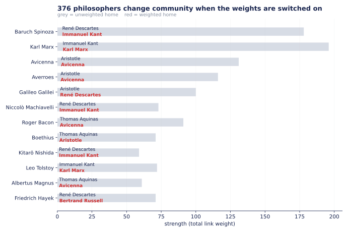

We swapped the superheroes for 1,444 philosophers and asked four questions about groups. Two algorithms disagree about almost everything, Aristotle refuses to belong anywhere, and the whole picture falls apart at α = 0.05 because of a Roman doctor and a Dutch lens-grinder.
The setup
Marvel is out this week. Its community structure is real but weak, and the point of this week is to see groups rather than argue about whether they exist. So: every philosopher born before 1900 on Wikipedia's lists by century — 1,444 of them, with a link wherever one article links to another, and this time a weight on every link counting how many times.
The giant component holds 1,374 philosophers and 9,139 links. Before anything else, the numbers our pipeline has to reproduce, all of them published independently by the course:
| Quantity | Ours | Course | — |
|---|---|---|---|
| Giant component | 1,374 | 1,374 | match |
| Links | 9,139 | 9,139 | match |
| Weight range (both directions) | 1–24 | 1–24 | match |
| Aristotle degree / strength | 300 / 521 | 300 / 521 | match |
| Diogenes Laertius degree rank / strength rank | 15 / 5 | 15 / 5 | match |
| Louvain communities, Q | 8, 0.506 | 8, 0.506 | match |
| Backbone α = 0.2: links / attached / giant | 1,540 / 950 / 816 | 1,540 / 950 / 816 | match |
Every row of the backbone table and all three weight thresholds reproduce exactly, which is the cheapest evidence available that the disparity filter is implemented right. It does not make the conclusions right — that is the rest of the page.
Question one
Two algorithms, two philosophies. Louvain maximises modularity: it wants groups with more internal links than chance predicts. Infomap compresses a random walk: it wants groups a walker gets stuck inside. They are not approximations of one another, and the places they disagree are where the network is ambiguous.
Louvain gives 8 communities at Q = 0.506. Infomap gives many more modules, and the agreement between them is NMI = 0.66. For comparison, two Louvain runs with different seeds agree at 0.65–0.83 — so Infomap disagrees with Louvain about as much as Louvain disagrees with itself, which is either reassuring or alarming depending on how much faith you had in the partition.

Read the bars and the answer is not the same everywhere, which is the honest version of the question.
Aristotle's community survives Infomap nearly intact — 234 of its philosophers stay in one module. Greek antiquity really is a dense, self-referential region: these articles cite each other constantly, a random walker entering it does get stuck, and both methods see the same thing.
Descartes's community shatters into 16 modules, Aquinas's into 18. Louvain calls early modern Europe one group. Infomap says a walker dropped into it does not stay put — it wanders from the rationalists to the empiricists to the political theorists, because those sub-traditions are linked to each other but not densely enough to trap anything. Both are true statements about the same links.
In network terms the difference is what each method counts. Modularity compares link counts to a degree-preserving null, so a group with more internal links than expected is a community even if it is loosely woven. The map equation asks about flow, and flow needs density, not just surplus. So Infomap splits exactly where Louvain's groups are big and thin — which on this network is every European tradition after 1600, because they are all connected to each other through Kant and Descartes.
Our answer: Louvain tells the better story and Infomap tells the better truth. Louvain's eight groups have names a historian would recognise — Greek antiquity, the scholastics, German idealism. Infomap's modules are more faithful to what the links actually do and much harder to narrate. If we had to publish one figure we would publish Louvain's, and we would say in the caption that Infomap cuts it into pieces.
Question two
Louvain's answer is Greek antiquity, with Plato, Cicero, Heraclitus and Socrates. That answer is a consequence of the method rather than a finding, because a partition assigns every node to exactly one community and Aristotle has 300 links.
So we drew all 300 of them, coloured by which community sits at the far end.

45%. Louvain's label describes fewer than half of his connections. The remaining 164 links run to the scholastics (67), the early moderns (34), the Germans (30), Russell's founders (17) and the Islamic and Jewish philosophers (13).
The k-clique analysis makes the same point structurally. At k = 5 Aristotle is in six separate clique communities — more than any other philosopher — and they are recognisably different worlds: one with Plato and the moderns, one with Boethius and the 12th-century School of Chartres, one with Ockham and the Oxford Calculators, one with Avicenna and al-Farabi, one with Aquinas and Averroes, and one with Husserl and Heidegger. Six traditions, twenty-three centuries, one node.
Our argument is that the question has no answer and that is the finding. Aristotle is not badly classified by Louvain; he is unclassifiable by any partition, because he is the thing six traditions were built on top of. The overlap methods are not a better tool for finding his community — they are the tools that can say he has six. A method that returns one community for Aristotle is not wrong about the network, it is answering a different question, and the 45% figure is how you tell.
Question three
The full network is a hairball — 9,139 links, most of them weight 1 and most of those a single passing mention. The disparity filter cuts it down per node rather than globally, so a minor philosopher's only meaningful tie survives alongside a hub's important ones.

Reading left to right: at α = 0.05, 292 links survive, 348 philosophers keep one, and the largest connected piece is 116. At α = 0.10, 649 links, 607 attached, giant 419. At α = 0.20, 1,540 links, 950 attached, giant 816 — the setting where the drawing finally shows traditions rather than dust.
Sweeping α in steps of 0.005 finds the sharpest single jump between α = 0.050 and α = 0.055, where the giant component goes from 116 to 178 philosophers. That is the percolation point: below it the backbone is a collection of separate traditions, above it they are one object.
And the links that close it are not the hubs'. The ties that appear across the threshold and join two previously separate pieces belong to Galen and Baruch Spinoza, two each.
Galen's are weight-2 ties to Hunayn ibn Ishaq, al-Razi and Paracelsus — the Greek medical tradition reaching the Islamic one and then the Renaissance. He ranks 55th by degree. Spinoza's run to Leibniz behind him and Hegel and George Eliot ahead, stitching early modern rationalism to German idealism. Neither is a hub in the way Aristotle or Kant is; both sit on a seam.
That is the disparity filter earning its keep. A global threshold at w ≥ 3 keeps a similar number of links and drops 87 more philosophers, because it judges a weight of 2 by the standard of Aristotle's strength of 521. For Galen a 2 is a significant share of 85. The philosophers who hold the picture together are exactly the ones a global threshold throws away.
Question four
Yes, and not a subtle one. Weighted Louvain finds 9 communities at a weighted Q of 0.56 against the unweighted 8 at 0.506 — and those two numbers should not be compared, since strong ties concentrate inside groups almost by construction and the weighted score has a higher ceiling. The comparison that means something is the NMI between the two partitions: 0.66.

That is the same number as Louvain vs Infomap. Switching the weights on disagrees with the unweighted partition exactly as much as switching the entire algorithm does. 376 of 1,374 philosophers change community.

The movers are not random. They cluster on the seams between traditions, and most of them move toward Kant — Spinoza, Machiavelli, Kitarō Nishida and, in our run, Descartes himself. The mechanism is that weighted Louvain follows thick ties, and the German tradition's internal citations are unusually heavy: philosophers who cite each other repeatedly, in articles that discuss the same arguments over and over. A philosopher whose links are many but thin stays where the unweighted partition put them; one whose heaviest few links point into Germany gets pulled in.
So the weighted network tells a story about influence density and the unweighted one tells a story about breadth of contact. Descartes touches the whole Enlightenment lightly and Kant's circle heavily. Both are true; the weighting decides which one the partition reports.
A caveat we cannot get rid of. Which philosophers appear in that figure depends on the seed. Louvain is stochastic, two runs agree at NMI 0.65–0.83, and the movers on the borders are precisely the nodes whose assignment is least stable. We checked: in a second run Averroes moves and Spinoza does not, and in this run it is the reverse.
The count is stable at around 376, and so is the pattern — movers are border philosophers, and they move toward the heavy-tie communities. The individual names are one run's names. We are reporting them because they are illustrative, not because they are the answer, and a consensus over many runs would be the honest version of this figure.
The cast
Everything above is about positions in a graph. This is about the people who occupy them — who they were, what they changed, and why the links fall the way they do.
Who they were, what they changed, and why the network puts them where it does. Click anyone.
the hub · Aristotle's community
384–322 BC · Greek antiquity
Plato's student, Alexander's tutor, and the man who wrote the first systematic treatment of more or less everything: logic, physics, biology, ethics, politics, rhetoric, poetics. His syllogism was the whole of formal logic for two thousand years. Aquinas calls him simply the Philosopher, no name needed, and gets away with it.
The largest node in the network by both measures — 300 links and strength 521, first on both lists, and no second place is close. But the reason he matters here is the one thing a partition cannot handle: Louvain puts him in Greek antiquity, and that community holds only 45% of his links. The other 55% run to Aquinas's scholastics, Descartes's early moderns, Kant's Germans and Russell's founders. He is not in a tradition. He is the thing the traditions are arguing about.
Heraclitus (13), Theophrastus (10), Xenophanes (9)
Their Wikipedia page →the source · Aristotle's community
3rd century AD · biographer
Not really a philosopher at all — a biographer, and a famously uncritical one. His Lives of the Eminent Philosophers gossips its way through eighty-odd thinkers, quoting letters and wills and deathbed jokes. For a great many ancient philosophers it is the only source that survives, which means a lot of what anybody knows about early Greek thought rests on a man who believed most of what he was told.
The clearest case in the network of strength saying something degree cannot. He ranks 15th by degree with 91 links, but 5th by strength at 230 — his links are thick because ancient philosophers' articles cite him over and over, each citation another mention. Degree counts how many people you are connected to; strength counts how much. For Diogenes those are very different numbers, and the gap is exactly his role as everyone's footnote.
Thales of Miletus (8), Chrysippus (6), Epicharmus of Cos (6)
Their Wikipedia page →breaks the backbone · Aristotle's community
129–c. 216 AD · medicine
Physician to gladiators and then to emperors, and the author of an anatomy so authoritative that European medicine simply repeated it for thirteen hundred years — including the errors, since he had dissected pigs and apes rather than people. Also a serious logician who insisted that a doctor must be a philosopher.
One of the two philosophers whose links close the backbone. At α = 0.05 the disparity-filtered network is in pieces, with a largest component of 116; push α up and Galen's weight-2 ties to Hunayn ibn Ishaq, al-Razi and Paracelsus become significant and stitch the Greek and Islamic medical traditions back together. He has only 49 links and ranks 55th — but they sit exactly where two traditions meet, which is why they are the ones holding the picture together.
Hunayn ibn Ishaq (7), Abu Bakr al-Razi (5), Aristotle (5)
Their Wikipedia page →breaks the backbone · Immanuel Kant's community
1632–1677 · rationalism
Excommunicated by Amsterdam's Jewish community at 23 and never took another institutional post, grinding optical lenses for a living instead. The Ethics argues, in the format of Euclid's geometry, that God and nature are the same substance — a claim that made him a byword for atheism for a century and then made him the hero of the German Romantics.
The other philosopher whose links close the break. 103 links and strength 178, ninth by degree — a substantial node, but the interesting thing is where he sits. His strongest ties run backwards to Leibniz and forwards to Hegel and George Eliot, which is to say across the seam between early modern rationalism and German idealism. When the backbone comes apart at α = 0.05, that seam is one of the first things to tear, and Spinoza's ties are what mend it.
Gottfried Wilhelm Leibniz (8), Georg Wilhelm Friedrich Hegel (5), George Eliot (5)
Their Wikipedia page →the bridge · Avicenna's community
c. 980–1037 · Islamic golden age
Ibn Sina, who allegedly memorised the Quran by ten and had exhausted his tutors by fourteen. Wrote the Canon of Medicine, a standard European textbook into the 1600s, and The Book of Healing, which fused Aristotle with Islamic theology thoroughly enough that Aquinas had to argue with him to get Aristotle back. The floating-man thought experiment is his.
Louvain names a whole community after him, and it is the one the course page calls out as the group nobody would name: the Islamic and Jewish philosophers — Averroes, Maimonides, al-Ghazali — sitting together with Galileo, Copernicus and Francis Bacon. That is not a school. It is a transmission route, Greek thought reaching the Renaissance through Arabic commentary, and the network has found the route rather than the school. A good reminder that a community is a dense region, not a label with a meaning attached.
Al-Farabi (8), Omar Khayyam (7), Averroes (6)
Their Wikipedia page →the commentator · Avicenna's community
1126–1198 · Córdoba
Ibn Rushd, judge and court physician in Almohad Córdoba, who spent his life writing commentaries on Aristotle so thorough that Latin Europe called him simply the Commentator. He argued against al-Ghazali that philosophy and revelation cannot contradict each other because both are true. Condemned late in life, his books burned in Islamic Spain — and copied enthusiastically in Paris.
Sits in Avicenna's community with 55 links and strength 116, and his strongest ties are the argument itself: al-Ghazali at weight 10 (the man he was refuting) and Thomas Aquinas at 9 (the man refuting him). Weight-10 and weight-9 links between people who disagreed violently. It is the clearest illustration in the network that a strong tie means entangled, not allied — an intellectual feud generates as many mentions as a friendship.
Al-Ghazali (10), Thomas Aquinas (9), Al-Farabi (7)
Their Wikipedia page →the scholastic · Thomas Aquinas's community
1225–1274 · scholasticism
A Dominican friar so quiet as a student that classmates called him the dumb ox. The Summa Theologiae is a machine for arguing: every question posed, the objections stated at their strongest, then the reply. He took Aristotle — newly arrived through Arabic commentary and regarded with suspicion — and made him the backbone of Christian theology.
Anchors the community that runs from Augustine through Dante to Luther and Erasmus, 115 links and strength 200. His strongest tie is to Averroes at weight 9, which is the same fact from the other side of Averroes's card: the two are bound together in the network because Aquinas spent the Summa contra Gentiles arguing with him. Two philosophers, two religions, one of the thickest links in the dataset.
Averroes (9), Thomas Cajetan (7), Aristotle (6)
Their Wikipedia page →moves with weights · René Descartes's community
1596–1650 · early modern
Soldier, then recluse, who wanted to rebuild knowledge from nothing after doubting everything he could — and found that the doubting itself was the one thing he could not doubt. Cogito ergo sum. Also invented the coordinate system every plot on this page is drawn in, which is a decent day's work on its own.
Names his own community in the unweighted network — early modern Europe and the Enlightenment, with Leibniz, Spinoza, Locke, Hume and Voltaire. Switch the weights on and in our run he moves into Kant's German community, one of 376 philosophers who change. The move is not arbitrary: weighted Louvain follows thick ties, and the thickest things attached to Descartes point forward into German idealism rather than sideways into the Enlightenment. Which home is right depends entirely on which question you asked.
Gottfried Wilhelm Leibniz (7), Nicolas Malebranche (7), Blaise Pascal (6)
Their Wikipedia page →the attractor · Immanuel Kant's community
1724–1804 · German idealism
Never travelled more than about a hundred miles from Königsberg and reportedly kept a schedule the neighbours set their clocks by. Then wrote the Critique of Pure Reason, which argues that the mind imposes the structure of space, time and causation on experience rather than reading it off the world — and split philosophy into before and after.
Third by both degree (201) and strength (344), and the destination of choice when the weights come on: Spinoza, Machiavelli, Kitarō Nishida and Descartes himself all land in his community in the weighted run. That is what a weighted partition does — it follows the heavy ties, and the German tradition's internal citations are unusually heavy. Kant does not gain links. He gains the philosophers whose heaviest links happen to point his way.
Karl Leonhard Reinhold (8), David Hume (7), Emanuel Swedenborg (7)
Their Wikipedia page →the island · Confucius's community
551–479 BC · China
Kongzi, an unsuccessful official who spent his career failing to get rulers to listen and became, posthumously, the organising figure of Chinese civil and ethical life for two millennia. The Analects is not a system but a collection of remarks, compiled by students, about how to behave.
Anchors one of the two communities every method agrees on. Louvain and Infomap disagree about almost everything — NMI 0.66, and Infomap cuts Descartes's community into sixteen pieces — but the Chinese and Indian groups survive both, because they are genuinely near-separate regions of Wikipedia rather than dense patches inside a connected argument. Only 36 links and strength 65, ranked 90th; the community's coherence comes from its isolation, not its size.
Laozi (8), Zichan (7), Zengzi (5)
Their Wikipedia page →Conclusion
We asked four unrelated things and got the same shape of answer each time: the method is a question, and the network gives a different answer to each one. Louvain and Infomap disagree at NMI 0.66. Weighted and unweighted Louvain disagree at NMI 0.66. Aristotle's Louvain label covers 45% of his links, and k-cliques give him six communities instead of one. Change α from 0.05 to 0.055 and a fragmented picture becomes a connected one.
None of these is a case of one method being broken. Modularity and the map equation measure different things; weights and counts measure different things; a partition and an overlap are different objects. The failure mode is not choosing wrong — it is reporting one and calling it the structure.
The result we would defend hardest is the Aristotle figure, because the number is unarguable. 45% is not a close call. Any sentence of the form "Aristotle belongs to the Greek tradition," delivered by an algorithm, is discarding more than half the evidence, and the figure shows exactly how much.
And the one that surprised us most is Galen. We expected the backbone to break at a hub. It breaks at a 2nd-century physician ranked 55th by degree, whose weight-2 links happen to sit where Greek medicine meets Arabic. Importance of the kind that holds a picture together is not the same as importance of the kind that shows up in a ranking — which is the same lesson week 3 ended on, arrived at from the opposite direction.